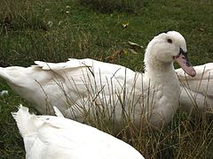
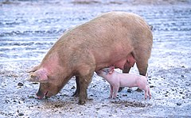

-
Uprawa Rolna
-
Rośliny zbożowe
- Żyto
- Pszenica
- Jęczmień
Rodzaj roślin jednorocznych, dwuletnich lub wieloletnich z rodziny wiechlinowatych. Pochodzi z Azji. Liczy około 10 gatunków. Żyto jest popularną rośliną uprawną, choć jego powierzchnia uprawy i znaczenie gospodarcze spada. Ziarniaki żyta są stosowane do wyrobu pasz dla bydła i trzody chlewnej. Z żyta produkuje się również mąkę, którą stosuje się głównie do wypieku chleba. Produkuje się z niego też alkohol etylowy. Słomę żytnią stosowano do wyrobu strzech, sienników oraz jako ściółkę dla zwierząt.
Pochodzi z południowo-zachodniej i środkowej Azji. Wyróżnia się około 20 gatunków pszenicy i około 10 mieszańców międzygatunkowych. Oprócz jęczmienia jest najdawniej uprawianym zbożem. Zajmuje trzecie (po kukurydzy i ryżu) miejsce w światowej produkcji zbóż. W 2018 roku produkcja na świecie wyniosła 734.045.174 ton.
Rodzaj zbóż z rodziny wiechlinowatych. Obejmuje ok. 36–40 gatunków traw jednorocznych i trwałych. Zasięg rodzaju obejmuje rozległe obszary półkuli północnej i niewielkie południowej.Jęczmień zwyczajny znajduje zastosowanie jako podstawowy surowiec do produkcji słodu jęczmiennego w browarnictwie oraz do produkcji kasz. Jęczmień jest także rośliną pastewną. Krótki okres wegetacji rośliny wynoszący 90 dni umożliwia uprawianie jej na terenach o chłodniejszym klimacie, a specjalnie wyhodowana odmiana o okresie wegetacji wynoszącym 55 dni, także na obszarach dalekiej północy. Ponadto, jęczmień wykorzystywany jest przy produkcji szkockiej i irlandzkiej whisky.
-
Rośliny okopowe
- Burak
- Marchew
- Ziemniak
Rodzaj roślin należący do rodziny szarłatowatych. Obejmuje 12 gatunków rozprzestrzenionych na całym świecie. W naturze przedstawiciele rodzaju rosną w miejscach kamienistych oraz na siedliskach ruderalnych. Szereg odmian uprawnych uzyskanych z buraka zwyczajnego to popularne warzywa.
Rodzaj roślin z rodziny selerowatych. Rodzaj liczy w zależności od ujęcia od ok. 22–28 gatunków do ok. 44–60. W tym drugim wypadku włączane są tu rodzaje: Agrocharis, Margotia, Melanoselinum, Pseudorlaya, Turgenia. Rośliny te występują na wszystkich kontynentach, ale centrum zróżnicowania stanowi Europa, południowo-zachodnia i środkowa Azja, zwłaszcza obszar śródziemnomorski. W Polsce rośnie dziko podgatunek typowy marchwi zwyczajnej D. carota subsp. carota i w uprawie marchew zwyczajna jadalna D. carota subsp. sativus. Uprawiana i przejściowo dziczejąca jest poza tym także marchew złocista D. aureus.
Gatunek rośliny należący do rodziny psiankowatych. Nazwa „ziemniak” odnosi się tak do całej rośliny, jak i do jej jadalnych, bogatych w skrobię bulw pędowych, z powodu których ten gatunek uprawia się na skalę masową. Roślina wywodzi się z Ameryki Południowej, gdzie zaczęto ją uprawiać już tysiące lat temu. Ziemniak został przywieziony do Europy w końcu XVI wieku, a w ciągu następnych stuleci stał się jednym z podstawowych składników jadłospisu na całym świecie. W 2009 był czwartą pod względem wielkości produkcji rośliną uprawną.
-
Rośliny specjalne
- Chmiel
- Tytoń
- Wiklina
Rodzaj roślin pnących z rodziny konopiowatych. Należą do niego w zależności od ujęcia systematycznego 3 lub 7 gatunków. Występują one w strefie klimatu umiarkowanego półkuli północnej. W Polsce rośnie dziko i uprawiany jest chmiel zwyczajny H. lupulus, przejściowo dziczeje także chmiel japoński H. scandens.
Rodzaj roślin zielnych z rodziny psiankowatych. Obejmuje ok. 70 – 75 gatunków pochodzących z obydwu Ameryk oraz z Australii. Szereg gatunków uprawianych jest też w wielu innych rejonach świata. Rośliny te, a zwłaszcza tytoń szlachetny N. tabacum i tytoń bakun N. rustica są stosowane na całym świecie do wyrobu produktów tytoniowych.W Polsce uprawiane są do celów przemysłowych i ozdobnych głównie: tytoń szlachetny N. tabacum, tytoń bakun N. rustica, tytoń oskrzydlony N. alata., rzadziej inne gatunki.
Młode pędy kilku gatunków wierzb, które po obróbce wykorzystywane są w wikliniarstwie (plecionkarstwie). Nazwa ta jest także zwyczajowym określeniem wierzby purpurowej. Z wikliny wykonuje się koze, wózki dziecęca oraz ozdovby. Wykorzystywana jest też jako wysokoenergetyczny surowiec opałowy.
-
Rośliny zbożowe
-
Chów zwierząt
-
Drób
- Kaczka domowa 
- Gęś domowa
- Kura domowa
Ptak gospodarski z rodziny kaczkowatych, udomowiona forma kaczki krzyżówki (Anas platyrhynchos), kaczki chińskiej (Anas zonorhyncha) i piżmówek (Cairina moschata). Kaczki domowe mogą być utrzymywane celem pozyskania mięsa, jaj, pierza, jako zwie4rzęta towarzyszące lub ozdobne.
Ptak gospodarski - wodny, użytkowy, będący udomowioną formą gęsi gęgawy (Anser anser) i gęsi łabędzionosej (Anser cygnoides). Z uwagi na niskie wyagania pokarmowe i bardzo dobrą odporność nadają się idealnie pod hodowlę na mięso bądź pióra.
Ptak hodowlany z rodziny kurowatych. Uważa się, że stanowi formę udomowioną kura bankiwa (Gallus gallus), lecz nie wyklucza się domieszki innych gatunków południowoazjatyckich kuraków (zarówno żyjących, np. kur siwy, jak i wymarłych). Są hodowane są w celach pozyskiwania mięsa, jajek, piór, oraz do celów ogólnoużytkowych.
-
Hodowla zwierząt
- Świnia domowa 
Zwierzę hodowlane z rodziny świniowatych. Pochodzi od udomowionego dzika krzyżowanego najprawdopodobniej krzyżowanego z genami krowy. Dostarcza hodowcom mięsa, tłuszczu, skóry, podroby oraz szczeciny. Z uwagi na to, że ma niskie wymagania hodowlane hodowana jest na całym świecie.
- Bydło domowe (krowa)
- Królik domowy
Udomowiony podgatunek tura europejskiego, zwierzęcia z rodziny wołowatych. Dzikim przodkiem formy udomowionej był tur Bos primigenius. Bydło chowane na mięso, jako siła robocza oraz w celu uzyskania mleka.
Udomowiona forma królika europejskiego (Oryctolagus cuniculus), zajęczaka z rodziny zającowatych Początkowo celem hodowli królików było tylko zwiększenie masy ciała. Z czasem zaczęto je hodować również dla wełny i skór. Królik ma nie tylko znaczenie gospodarcze, jest również wykorzystywany jako zwierzę laboratoryjne i coraz częściej pełni funkcję zwierzęcia domowego, trzymanego dla towarzystwa.
-
Drób
-
Inne
- Pszczoły
- Ryby
- Jedwabniki
Monofiletyczna grupa owadów bez ustalonej rangi taksonomicznej w obrębie nadrodziny Apoidea z rzędu błonoskrzydłych. Pszczoły są grupą żądłówek blisko spokrewnioną z grzebaczami. Wyewoluowały z form karmiących swoje potomstwo pokarmem zwierzęcym.
Tradycyjna nazwa zmiennocieplnych, pierwotnie wodnych kręgowców, oddychających skrzelami i poruszających się za pomocą płetw. Obejmuje bezżuchwowce krągłouste (Cyclostomata) oraz mające szczęki ryby właściwe (Pisces). Ryby chowane są na mięso, na nawozy, lekarstwa, bioindykatory oraz jubilestwo.
Grupa owadów wytwarzających włókno jedwabne, wykorzystywanych do produkcji jedwabiu.Jedwab jest produkowany przez większość gąsienic ciem. Najlepszą jakość przędzy uzyskuje się od gatunków z rodzin pawicowatych (Saturniidae) i prządkowatych (Bombycidae), a w szczególności od gąsienic jedwabnika morwowego (Bombyx mori).
Rolnictwo w Polsce zaliczane jest do i sektora gospodarki narodowej, obejmuje uprawę roślin oraz hodowlę zwierząt. Jego celem nadrzędnym jest wytwarzanie żywności, dostarczanie jej mieszkańcom kraju, paszy dla zwierząt oraz surowców przemysłowi twórczemu. Produkcja rolna dzieli się na roślinną i zwierzęcą. Uprawa roślin dostarcza m.in. ziarna zbóż, warzyw i owoców. Dzięki hodowli zwierząt mamy przede wszystkim mięso, a ponadto mleko, jaja, tłuszcze, skóry i inne. W poniższej liście przedstawiłem w mojej opinii najciekawsze bądź najpotrzebniejsze hodowle w Polsce.
-
Drzewa
- Jabłonie
- Grusze
- Wiśnie
Rodzaj roślin wieloletnich należący do rodziny różowatych. Obejmuje w zależności od ujęcia ok. 25, 32 do 55 gatunków. W Polsce występuje dziko tylko jeden gatunek rodzimy – jabłoń dzika Malus sylvestris, zwana też płonką. Liczne gatunki z rodzaju są uprawiane. Jabłoń domowa Malus domestica jest popularną rośliną sadowniczą dla jadalnych owoców – jabłek. Gatunek ten rozprzestrzeniony w uprawie rośnie też w wielu obszarach jako zdziczały, także w Polsce. Inne gatunki wykorzystywane są jako rośliny ozdobne, źródło surowca drzewnego, wykorzystywane są też leczniczo.
Rodzaj w większości niewielkich drzew z rodziny różowatych (Rosaceae). Systematyka grusz jest bardzo zawiła. Gatunki łatwo się ze sobą krzyżują, tworząc liczne podgatunki i formy przejściowe. Dlatego wśród systematyków brak zgody co do podziału grusz, rozgraniczenia i liczby ich gatunków oraz odmian botanicznych.
rodzaj, podrodzaj lub sekcja (w zależności od ujęcia klasyfikacyjnego) roślin z rodziny różowatych.W Polsce występują dwa gatunki rodzime: wiśnia karłowata (C. fruticosa ≡ Prunus fruticosa) oraz wiśnia ptasia, zwana czereśnią (C. avium ≡ Prunus avium), dwa kolejne gatunki mają status zadomowionych antropofitów: wiśnia wonna (C. mahaleb ≡ Prunus mahaleb) i wiśnia pospolita (C. vulgaris ≡ Prunus cerasus). Liczne gatunki z tego rodzaju/sekcji są uprawiane jako ozdobne lub owocowe.
-
Krzewy
- Agrest
- Jeżyna
- Porzeczki
Gatunek krzewu z rodziny agrestowatych (Grossulariaceae DC.). Występuje w stanie dzikim w Europie, Azji, Afryce. W Polsce roślina uprawiana, dość często dziczejąca (kenofit, agriofit). Uprawiana dla owoca.
rodzaj roślin z rodziny różowatych. Część przedstawicieli określana jest zwyczajowo w języku polskim malinami (gatunki o różnej przynależności w obrębie podrodzajów, które łączy czerwona barwa owoców i odpadanie ich od dna kwiatowego po dojrzeniu). Uprawiana dla owoca bądź w celach ozdobnych.
Rodzaj krzewów z monotypowej rodziny agrestowatych Grossulariaceae. W Polsce rośnie dziko 6 gatunków. Są to krzewy rosnące w różnych siedliskach – od mokradeł poprzez lasy różnego typu i tereny skaliste na obszarach o suchym klimacie i w górach. Rzadko rosną też jako epifity. Wiele gatunków to ważne rośliny owocowe (zwłaszcza porzeczka agrest R. uva-crispa, porzeczka zwyczajna R. rubrum, porzeczka czarna R. nigrum), inne są cenionymi roślinami ozdobnymi lub mającymi inne zastosowania w ogrodnictwie lub nasadzeniach biotechnicznych
-
Krzewiki
- Truskawka
- Borówka
- Lawenda
Roślina mieszaniec dwóch gatunków poziomki z rodziny różowatych (Rosaceae Juss.). Ma wiele nazw zwyczajowych: poziomka ananasowa, poziomka wielkoowocowa, najczęściej jednak nazywana jest po prostu truskawką. Uprawiana dla owoca we wszystkich krajach klimatu umiarkowanego.
Rodzaj roślin z rodziny wrzosowatych (Ericaceae). We florze Polski rodzaj reprezentowany jest przez 5 gatunków: borówkę bagienną Vaccinium uliginosum, brusznicę V. vitis-idaea, czarną V. myrtillus, halną V. gaultherioides i żurawinę błotną V. oxycoccus. Owoce borówek są jadalne, przy czym w przypadku większości gatunków zbierane są ze stanu dzikiego (w tym borówki brusznicy i czarnej). Uprawiane są odmiany, często mieszańcowego pochodzenia, uzyskane z borówki wysokiej V. corymbosum, a także żurawiny wielkoowocowej V. macrocarpon. Owoce poza walorami smakowymi cenione są ze względu na właściwości antyoksydacyjne i przeciwzapalne.
Rodzaj roślin z rodziny jasnotowatych. Obejmuje 41 gatunków. Różne gatunki lawendy, a zwłaszcza tetraploidalny mieszaniec L. ×intermedia, są rozpowszechnione w uprawie. Do bardziej mrozoodpornych należy lawenda wąskolistna L. angustifolia. Roślina ta dobrze zaaklimatyzowała się także w południowych rejonach Polski. Sadzona jest głównie w ogrodach, pożytkowana na plantacjach. Biorąc pod uwagę południowe pochodzenie, najlepsze pod uprawę tej rośliny są pola osłonięte od zimnych wiatrów i nasłonecznione. Najlepiej udaje się na glebach ciepłych, przepuszczalnych, piaszczystych o odczynie zasadowym.